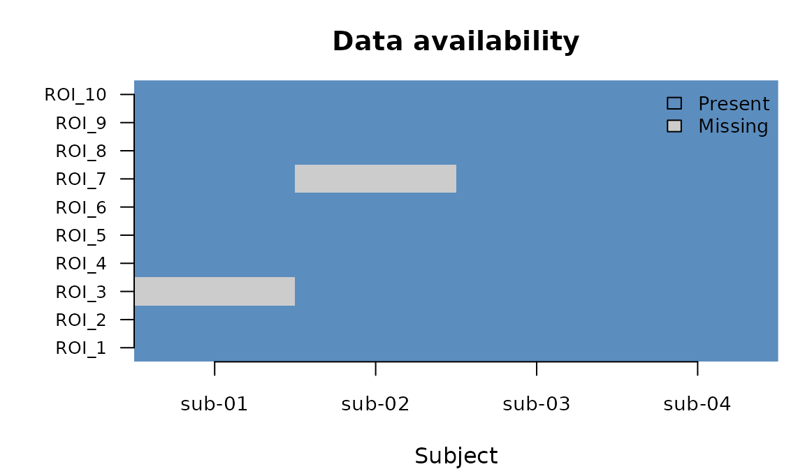
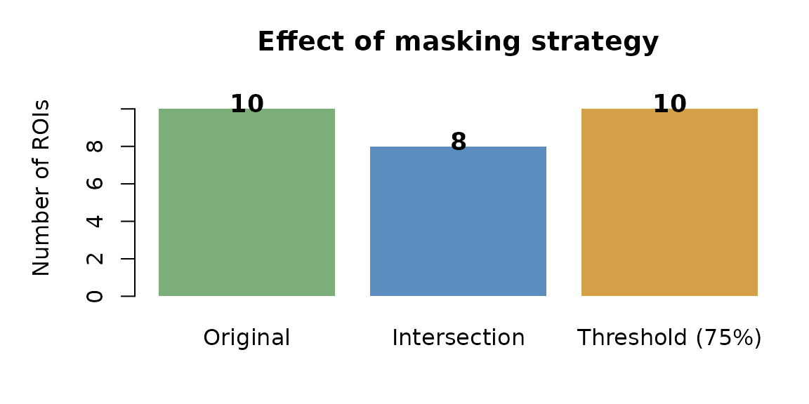
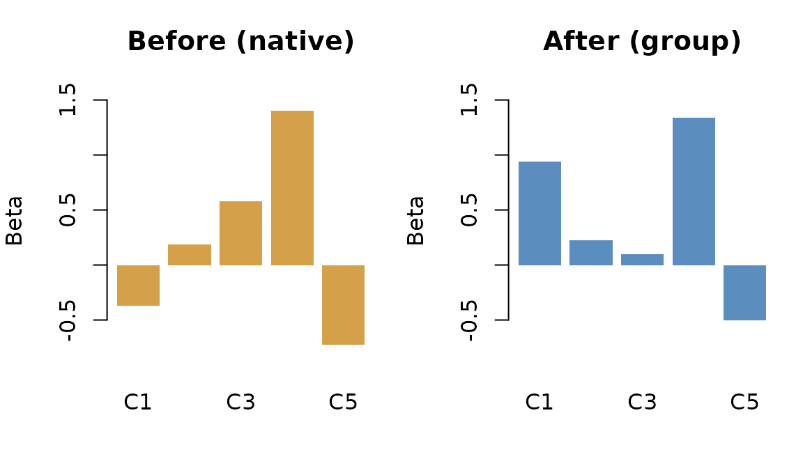
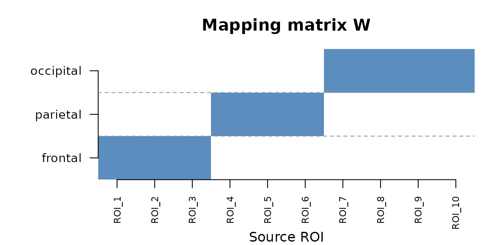

Spatial operations: masking, alignment, and mapping
Source:vignettes/spatial-operations.Rmd
spatial-operations.RmdWhen do you need this?
The getting-started vignette (vignette("fmrigds"))
covers the standard pipeline: load data, derive statistics, reduce
across subjects, and correct for multiple comparisons. That workflow
assumes two things:
- Every subject has data at every spatial location (no missing voxels).
- All subjects live in the same coordinate system (a common space).
In practice, neither assumption always holds. This vignette introduces three verbs that handle the messy cases:
-
mask()— removes spatial locations that have missing or unreliable data. -
align()— rotates each subject’s data into a shared coordinate system. -
map_to()— transforms data from one spatial representation to another (e.g., voxels to parcels).
All three are lazy: they add a step to the analysis plan without
doing any computation until you call compute().
Building a GDS from in-memory data
The examples in this vignette use synthetic data created in R rather
than files on disk. When your data already lives in memory,
as_gds() turns it into a GDS object directly.
The key input is a named list of 3D arrays. Each array has dimensions samples x subjects x contrasts:
- Samples (first dimension): the spatial units—ROIs, voxels, or components.
- Subjects (second dimension): one slice per participant.
- Contrasts (third dimension): one slice per experimental condition.
Here is a small example with 10 ROIs, 4 subjects, and 1 contrast:
betas <- array(rnorm(40, mean = 1), dim = c(10, 4, 1))
vars <- array(runif(40, 0.01, 0.1), dim = c(10, 4, 1))
g <- as_gds(
list(beta = betas, var = vars),
space = space_parcels(paste0("ROI_", 1:10)),
subjects = paste0("sub-", sprintf("%02d", 1:4)),
contrasts = "faces"
)
explain(g)
#> GDS
#> dims: 10 x 4 x 1 [sample x subject x contrast]
#> space: parcels n=10
#> subjects: 4 (sub-01, sub-02, sub-03, ...)
#> contrasts: 1 (faces)
#> assays: beta[location], var[variance]The space argument tells fmrigds what the sample axis
represents. Here we use space_parcels() because our samples
are named ROIs. For voxelwise data you would use
space_voxel() with grid dimensions and an affine matrix;
for latent-space data (PCA, ICA), space_basis().
Masking: dealing with missing data
Why mask?
In whole-brain analyses, some subjects may have signal dropout or
incomplete coverage in certain brain regions. Those missing values show
up as NA in the data arrays. If you run a group-level
reduction on data that contains NAs, the missing values
propagate into the result and you lose information at locations where
most subjects do have data.
The mask() verb lets you decide, up front, which spatial
locations have enough data to be worth analysing. It removes the rest
before any downstream computation.
Setting up the example
Let’s inject some missing values into our test data to see masking in
action. We create a fresh GDS with NAs already in
place:
# ROI_3 is missing for subject 1; ROI_7 is missing for subject 2
assay(g, "beta")[c(3, 7), , 1]
#> [,1] [,2] [,3] [,4]
#> [1,] NA -0.3888607 0.8280826 2.035104
#> [2,] 2.511522 NA 0.7427306 0.215541Now ROI_3 and ROI_7 each have one subject with missing data.

Data availability across ROIs and subjects. Grey cells indicate missing values.
Intersection mask (the default)
The simplest policy is "intersection": keep only
locations where every subject has valid (non-NA)
data. This is the strictest rule—if even one subject is missing, that
location is dropped.
g_masked <- mask(g) |> compute()
explain(g_masked)
#> GDS
#> dims: 8 x 4 x 1 [sample x subject x contrast]
#> space: parcels n=8
#> subjects: 4 (sub-01, sub-02, sub-03, ...)
#> contrasts: 1 (faces)
#> assays: beta[location], var[variance], se[stdev], t[t]ROI_3 and ROI_7 were dropped because they had at least one
NA. The remaining 8 ROIs all have complete data.
Threshold mask
The intersection rule can be wasteful when you have many subjects—one
missing subject out of 50 would discard the location entirely. The
"threshold" rule is more permissive: it keeps a location if
the fraction of non-missing values exceeds a threshold you choose.
# Keep ROIs where at least 75% of values are non-missing
g_thresh <- mask(g, MaskPolicy(rule = "threshold", threshold = 0.75)) |>
compute()
explain(g_thresh)
#> GDS
#> dims: 10 x 4 x 1 [sample x subject x contrast]
#> space: parcels n=10
#> subjects: 4 (sub-01, sub-02, sub-03, ...)
#> contrasts: 1 (faces)
#> assays: beta[location], var[variance], se[stdev], t[t]With a 75% threshold, ROI_3 and ROI_7 both survive: each has 3 out of 4 subjects present (75%), which meets the cutoff.

Number of ROIs retained under different masking strategies.
Intersection masking is conservative—it discards any ROI with even one missing subject. Threshold masking recovers those ROIs when most subjects have data.
Other mask rules
Here is the full set of options:
| Rule | Behaviour |
|---|---|
"intersection" |
Keep locations where all subjects have data (strictest) |
"union" |
Keep locations where any subject has data (most permissive) |
"threshold" |
Keep locations where the fraction of non-missing values >=
threshold
|
"custom" |
You provide a function that returns a logical vector |
A custom mask function receives the list of assay arrays and returns
one TRUE/FALSE per sample. For example, to
keep only ROIs with a strong average signal:
Masking in a pipeline
Because mask() is lazy, you can slot it into a larger
pipeline. Here we mask first, then run a group analysis with FDR
correction—all as a single plan:
result <- as_plan(g) |>
mask(MaskPolicy(rule = "intersection")) |>
reduce(method = "fixed") |>
posthoc("fdr:bh") |>
compute()
names(assays(result))
#> [1] "beta" "var" "beta_g" "var_g" "se_g" "z_g" "p_g" "Q"
#> [9] "I2" "n_eff" "z" "p" "q"The mask runs before the reduction, so the group model only sees complete cases.
Alignment: bringing subjects into a common space
Why align?
When you use dimensionality reduction (PCA, ICA) or functional alignment (hyperalignment) on fMRI data, each subject ends up in their own coordinate system. Component 1 for subject A is not the same as component 1 for subject B—the axes are rotated differently.
Before you can average across subjects, you need to apply a
per-subject rotation matrix that maps each subject’s data into a shared
“group” space. This is what align() does.
Creating test data in a latent space
Let’s create a GDS where each subject has 5 latent components, 2 experimental conditions, and a subject-specific coordinate system:
k <- 5 # number of latent components
n_sub <- 3 # number of subjects
n_con <- 2 # number of contrasts
betas_lat <- array(rnorm(k * n_sub * n_con), dim = c(k, n_sub, n_con))
vars_lat <- array(runif(k * n_sub * n_con, 0.01, 0.1), dim = c(k, n_sub, n_con))
# Define the native and target spaces
native_space <- space_basis(k, basis_name = "native_pca")
group_space <- space_basis(k, basis_name = "group_pca")
subs <- paste0("sub-", sprintf("%02d", 1:n_sub))
g_latent <- as_gds(
list(beta = betas_lat, var = vars_lat),
space = native_space,
subjects = subs,
contrasts = paste0("cond_", 1:n_con)
)The space_basis() constructor says “these samples are
latent components.” We have a native space (each subject’s own PCA axes)
and a target group space (shared axes).
Providing per-subject rotation matrices
In a real analysis, rotation matrices come from Procrustes alignment or hyperalignment. Here we simulate them using random orthogonal matrices:
random_orthogonal <- function(k) {
qr.Q(qr(matrix(rnorm(k * k), k, k)))
}
rotations <- setNames(
lapply(1:n_sub, function(i) random_orthogonal(k)),
subs
)
# Each rotation is a k-by-k orthogonal matrix
dim(rotations[[1]])
#> [1] 5 5Each matrix is k x k (5 x 5 here). Multiplying a
subject’s data by their rotation matrix maps them from native
coordinates into group coordinates.
Bundling rotations into a MapFamily
fmrigds needs to know not just the matrices but also what spaces they
connect and what properties they have. You bundle this information into
a MapFamily object. For orthogonal rotations, use the
OrthogonalFamily() helper:
alignment <- OrthogonalFamily(
name = "procrustes",
from_space = native_space,
to_space = group_space,
matrices_by_subject = rotations
)The orthogonal = TRUE trait tells fmrigds that these
matrices satisfy R'R = I, which simplifies variance
propagation—the variance of a rotated vector is just the rotated
variance, with no cross-terms.
Running the alignment
Now apply the alignment and compute:
g_aligned <- align(g_latent, alignment) |> compute()
explain(g_aligned)
#> GDS
#> dims: 5 x 3 x 2 [sample x subject x contrast]
#> space: basis
#> subjects: 3 (sub-01, sub-02, sub-03)
#> contrasts: 2 (cond_1, cond_2)
#> assays: beta[location], var[variance], se[stdev], t[t]
#> map families: procrustes
Betas before (native space) and after (group space) alignment for subject 1, condition 1.
After alignment, the space descriptor has changed from
native_pca to group_pca. Every subject’s data
has been rotated through their respective matrix, and variances have
been propagated through the rotation automatically. The component
loadings change because the coordinate axes have been remapped.
Alignment followed by group analysis
The common workflow is to align first, then reduce across subjects. Because subjects are now in a common space, the group average is meaningful:
result <- as_plan(g_latent) |>
align(alignment) |>
reduce(method = "fixed") |>
compute()
explain(result)
#> GDS
#> dims: 5 x 1 x 2 [sample x subject x contrast]
#> space: basis
#> subjects: 1 (meta)
#> contrasts: 2 (cond_1, cond_2)
#> assays: beta[location], var[variance], beta_g[?], var_g[?], se_g[?], z_g[?], p_g[?], Q[?], I2[?], n_eff[n_eff], z[z], p[p]
#> map families: procrustesOther alignment types
fmrigds provides helpers for different kinds of per-subject maps:
| Helper | Use case | Key property |
|---|---|---|
OrthogonalFamily() |
Procrustes, hyperalignment | Preserves distances (orthogonal) |
OTFamily() |
Optimal transport plans | Preserves total mass |
WarpFamily() |
Deformable spatial warps | General deformations |
MapFamily() |
Any linear transform | Fully customisable |
All follow the same pattern: bundle per-subject operators into a
family object, then pass it to align().
Space transformations with map_to()
Why transform spaces?
Sometimes you want to change the spatial resolution of your data. Common scenarios:
- Voxels to parcels: aggregate thousands of voxels into a smaller set of brain regions.
- Fine parcellation to coarse: collapse a detailed atlas (e.g., 400 regions) into broader networks (e.g., 7 networks).
- Projection: map data from one coordinate system to another using a known linear transformation.
map_to() applies a matrix transformation to the sample
axis. If the data has effect estimates and variances, the variances are
propagated through the transformation automatically.
Setting up a mapping
The transformation matrix has dimensions target_samples x source_samples. Each row defines how one target location is computed from the source locations. For averaging, each row sums to 1:
# 10 ROIs that we want to average into 3 regions:
# Region "frontal" = average of ROIs 1-3
# Region "parietal" = average of ROIs 4-6
# Region "occipital" = average of ROIs 7-10
g_clean <- as_gds(
list(
beta = array(rnorm(40, mean = 1.5), dim = c(10, 4, 1)),
var = array(runif(40, 0.01, 0.05), dim = c(10, 4, 1))
),
space = space_parcels(paste0("ROI_", 1:10)),
subjects = paste0("sub-", sprintf("%02d", 1:4)),
contrasts = "faces"
)
# Build the averaging matrix (3 target regions x 10 source ROIs)
W <- matrix(0, nrow = 3, ncol = 10)
W[1, 1:3] <- 1/3 # frontal = mean of ROI 1-3
W[2, 4:6] <- 1/3 # parietal = mean of ROI 4-6
W[3, 7:10] <- 1/4 # occipital = mean of ROI 7-10
target <- space_parcels(c("frontal", "parietal", "occipital"))
The mapping matrix aggregates 10 fine-grained ROIs into 3 broader brain regions.
Each coloured cell indicates a non-zero weight. ROIs 1–3 map to “frontal”, 4–6 to “parietal”, and 7–10 to “occipital”.
Applying the transformation
Wrap the matrix in a map_linear() object that records
the source and target spaces, then pass it to map_to():
mapping <- map_linear(
from_space = space_parcels(paste0("ROI_", 1:10)),
to_space = target,
operator = W
)
g_regions <- map_to(g_clean, target_space = target, map = mapping) |>
compute()
explain(g_regions)
#> GDS
#> dims: 3 x 4 x 1 [sample x subject x contrast]
#> space: parcels n=3
#> subjects: 4 (sub-01, sub-02, sub-03, ...)
#> contrasts: 1 (faces)
#> assays: beta[location], var[variance]
assay(g_regions, "beta")
#> , , 1
#>
#> [,1] [,2] [,3] [,4]
#> [1,] 1.478718 1.537494 1.3347244 1.814508
#> [2,] 1.059719 1.110867 1.3439407 1.649642
#> [3,] 1.206013 2.233578 0.8522503 1.461017Effect estimates before (10 ROIs) and after (3 regions) spatial aggregation, for subject 1.
Each target region now holds the average of its source ROIs. The
variances have also been propagated: under the default assumption that
source variances are independent,
Var(Wx) = W diag(v) W'.
How uncertainty propagation works
When you transform data through a linear map, the variances need to
be transformed too. By default, map_to() assumes the source
locations have independent variances (no spatial correlation). If your
data has spatial correlations, you can provide a covariance
function:
# Default: independent variances
map_to(g, target, mapping, uncertainty = UncertaintyRule("independent"))
# Correlated variances: provide a function that returns the covariance matrix
map_to(g, target, mapping, uncertainty = UncertaintyRule(
"cov_provider",
cov_provider = my_cov_function
))Combining test statistics without effect estimates
Sometimes your GDS contains only test statistics (z-scores or
p-values) without the underlying effect estimates and variances. In that
case, linear averaging does not apply. Instead, map_to()
can combine the statistics using established meta-analytic methods:
- Stouffer’s method: produces a weighted z-score for each target location.
- Fisher’s method: combines p-values using a chi-squared statistic.
# A GDS with only z-scores (no beta or var)
z_vals <- array(rnorm(40, mean = 2), dim = c(10, 4, 1))
g_zonly <- as_gds(
list(z = z_vals),
space = space_parcels(paste0("ROI_", 1:10)),
subjects = paste0("sub-", sprintf("%02d", 1:4)),
contrasts = "faces"
)
g_combined <- map_to(
g_zonly,
target_space = target,
map = W,
combine = "stouffer"
) |> compute()
names(assays(g_combined))
#> [1] "z" "p"
assay(g_combined, "z")
#> , , 1
#>
#> [,1] [,2] [,3] [,4]
#> [1,] 4.345908 2.167603 4.749368 3.912684
#> [2,] 4.571568 3.726133 2.978678 4.240634
#> [3,] 4.361189 2.953622 2.991708 4.906879The combined z-scores reflect the pooled evidence across the source locations in each target region.
Putting it all together
These verbs compose into a single pipeline. Here is a workflow that aligns subjects into a common latent space, then runs a group analysis:
k <- 6
n_sub <- 3
betas_full <- array(rnorm(k * n_sub, mean = 1), dim = c(k, n_sub, 1))
vars_full <- array(runif(k * n_sub, 0.01, 0.05), dim = c(k, n_sub, 1))
native <- space_basis(k, "native")
group <- space_basis(k, "group")
subjects_full <- paste0("sub-", sprintf("%02d", 1:n_sub))
g_raw <- as_gds(
list(beta = betas_full, var = vars_full),
space = native, subjects = subjects_full, contrasts = "task"
)
# Per-subject rotation matrices (simulated)
rots <- setNames(
lapply(1:n_sub, function(i) {
qr.Q(qr(matrix(rnorm(k * k), k, k)))
}),
subjects_full
)
fam <- OrthogonalFamily("hyper", native, group, rots)
# The full pipeline: align into group space, then reduce across subjects
result <- as_plan(g_raw) |>
align(fam) |>
reduce(method = "fixed") |>
compute()
explain(result)
#> GDS
#> dims: 6 x 1 x 1 [sample x subject x contrast]
#> space: basis
#> subjects: 1 (meta)
#> contrasts: 1 (task)
#> assays: beta[location], var[variance], beta_g[?], var_g[?], se_g[?], z_g[?], p_g[?], Q[?], I2[?], n_eff[n_eff], z[z], p[p]
#> map families: hyperThe pipeline reads left to right: rotate each subject into the group coordinate system, then pool their data using inverse-variance weighting.
A note on ordering. mask() changes the
number of spatial samples (it removes locations), while
align() expects the input dimension to match the rotation
matrix size. If you need both, run align() first to rotate
into the common space, then mask() to remove
locations with missing data, and finally reduce().
Space types at a glance
fmrigds supports five spatial representations. Each has a constructor function that records the relevant metadata:
| Constructor | What it represents | Typical use |
|---|---|---|
space_parcels() |
Named brain regions | ROI or atlas-based analyses |
space_voxel() |
3D volumetric grid | Whole-brain voxelwise analyses |
space_surface() |
Cortical triangle mesh | Surface-based analyses |
space_basis() |
Latent components | PCA, ICA, hyperalignment |
space_sample_labels() |
Generic labels | Tabular/CSV data (the default) |
Here are a few examples:
# A parcels space with four brain regions
sp_parcels <- space_parcels(c("V1", "V2", "FFA", "PPA"))
sp_parcels
#> $type
#> [1] "parcels"
#>
#> $labels
#> [1] "V1" "V2" "FFA" "PPA"
#>
#> $lookup
#> NULL
#>
#> $membership
#> NULL
#>
#> attr(,"class")
#> [1] "Space" "space_parcels" "gds_space"
# A latent basis space with 20 ICA components
sp_basis <- space_basis(k = 20, basis_name = "ICA")
sp_basis
#> $type
#> [1] "basis"
#>
#> $k
#> [1] 20
#>
#> $basis_name
#> [1] "ICA"
#>
#> $projector
#> NULL
#>
#> $voxel_space
#> NULL
#>
#> attr(,"class")
#> [1] "Space" "space_basis" "gds_space"
# A tiny voxel space (3x3x3 grid, 10 active voxels)
sp_voxel <- space_voxel(
dim = c(3, 3, 3),
affine = diag(4),
mask_bitmap = array(c(rep(TRUE, 10), rep(FALSE, 17)), dim = c(3, 3, 3)),
storage = "packed"
)
sp_voxel
#> $type
#> [1] "voxel"
#>
#> $dim
#> [1] 3 3 3
#>
#> $affine
#> [,1] [,2] [,3] [,4]
#> [1,] 1 0 0 0
#> [2,] 0 1 0 0
#> [3,] 0 0 1 0
#> [4,] 0 0 0 1
#>
#> $mask_bitmap
#> , , 1
#>
#> [,1] [,2] [,3]
#> [1,] TRUE TRUE TRUE
#> [2,] TRUE TRUE TRUE
#> [3,] TRUE TRUE TRUE
#>
#> , , 2
#>
#> [,1] [,2] [,3]
#> [1,] TRUE FALSE FALSE
#> [2,] FALSE FALSE FALSE
#> [3,] FALSE FALSE FALSE
#>
#> , , 3
#>
#> [,1] [,2] [,3]
#> [1,] FALSE FALSE FALSE
#> [2,] FALSE FALSE FALSE
#> [3,] FALSE FALSE FALSE
#>
#>
#> $mask_idx
#> [1] 1 2 3 4 5 6 7 8 9 10
#>
#> $storage
#> [1] "packed"
#>
#> $template_id
#> NULL
#>
#> attr(,"class")
#> [1] "Space" "space_voxel" "gds_space"The space descriptor travels with the GDS through every operation.
After a map_to(), the space updates to reflect the target.
After a mask(), labels for removed locations are dropped.
You never need to track this manually.
Next steps
-
vignette("fmrigds")— the core pipeline (load, derive, reduce, correct) -
vignette("as-plan-and-spatial-fdr")— standard and spatial FDR correction -
vignette("fmristore-ingestion")— reading fmristore HDF5 files -
?alignand?MapFamilyfor alignment details -
?maskand?MaskPolicyfor masking options -
?map_toand?map_linearfor space transformations